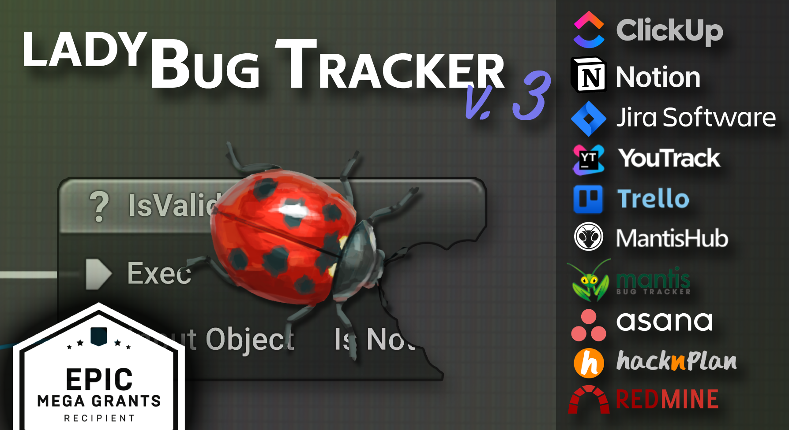
Author: Tomasz Klin
Version: 3.0.2
LadyBug Tracker is a plugin that integrates bug tracker systems with the UnrealEngine. Thanks to this plugin you will significantly increase the efficiency and convenience of your work. Forget about constant switching between the Unreal Engine editor and the browser with an open bug tracker page. Conveniently view and edit details of reported issues. Browse the issues directly in the level viewport. Report a bug straight from the editor and game. Create blueprints that automate reporting bugs for you.
The LadyBug Tracker plugin does not store any data. All reports are sent directly to the databases of the integrated services (Jira, YouTrack, Mantis, Trello, Asana, HacknPlan, Redmine, ClickUp, Notion) using their respective APIs. Only you have access to this data, and it is never sent anywhere else. Additionally, no data is collected for statistical or diagnostic purposes.
The ladyBug Tracker is designed to support many bug trackers systems.
Need other integration? Let me know
| YouTrack | Trello | Jira Software | Jira Server | Mantis | MantisHub | Asana | HacknPlan | Redmine | ClickUp | Notion | |
|---|---|---|---|---|---|---|---|---|---|---|---|
| View issues | Yes | Yes | Yes | Yes | Yes | Yes | Yes | Yes | Yes | Yes | Yes |
| Edit issues | Yes | Yes | Yes | Yes | Yes | Yes | Yes | Yes | Yes | Yes | Yes |
| Report issues | Yes | Yes | Yes | Yes | Yes | Yes | Yes | Yes | Yes | Yes | Yes |
| Custom fields | Yes | Yes1 | Yes | Yes | Yes | Yes | Yes1 | No2 | Yes | Yes1 | Yes |
| Sorting by columns | Yes | Yes | Yes | Yes | Yes | Yes | Yes | Yes | Yes | Yes | Yes |
| Filtering | Yes | Yes | Yes | Yes | Yes | Yes | Yes | Yes | Yes | Yes | Yes |
| 3D Markers | Yes | Yes | Yes | Yes | Yes | Yes | Yes | Yes | Yes | Yes | Yes |
| View attachments | Yes | Yes | Yes | Yes | Yes | Yes | Yes | Yes | Yes | Yes | Yes |
| Add attachments | Yes | Yes | Yes | Yes | Yes | Yes | Yes | Yes | Yes | Yes | Yes |
| Delete attachments | Yes | Yes | Yes | Yes | Yes | Yes | Yes | Yes | Yes | No2 | Yes |
| View comments | Yes | Yes | Yes | Yes | Yes | Yes | Yes | Yes | Yes | Yes | Yes |
| Add comment | Yes | Yes | Yes | Yes | Yes | Yes | Yes | Yes | Yes | Yes | Yes |
| Delete comment | Yes | Yes | Yes | Yes | Yes | Yes | Yes | Yes | Yes | Yes | No2 |
| View checklists (subtasks) | No2 | Yes | Yes | Yes | Yes | Yes | Yes | Yes | No | Yes | Yes |
| Edit checklists (subtasks) | No2 | Yes | Yes | Yes | Yes | Yes | Yes | Yes | No | Yes | Yes |
| Create project | No2 | Yes | No | No | Yes | Yes | Yes | Yes | No | Yes | No2 |
| View history | No | No | No | No | Yes | Yes | No | No | No | No | No |
| Free version users | 10 | 15 | 10 | - | unlimited | 0 | 10 | unlimited | unlimited | unlimited | unlimited4 |
| Free version storagetotal/per file | 30 GB / 500 MB | unlimited / 10 MB | 2 GB / 2GB | - | unlimited / unlimited | 0 / 0 | unlimited / 25MB | 500 MB / 5 MB | unlimited / unlimited | 1 GB / 100 MB | unlimited / 5 MB |
| Free version projects | unlimited | 10 | unlimited | - | unlimited | 0 | unlimited | unlimited | unlimited | unlimited lists (max 5 Spaces) | unlimited |
1 Available in the paid version of the service
2 Feature not provided by the service
3 Not yet implemented
4 Notion applies a 1,000-block limit once a workspace has more than one member
In order to enable the plugin to go to Edit -> Plugins, select Bug Tracker category and check Enabled for LadyBug Tracker
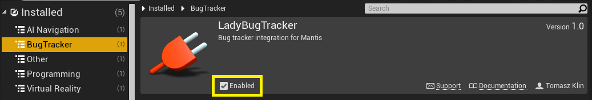
LadyBug Tracker is available as a tab for Unreal Editor. The tab can be accessed from the Window menu.
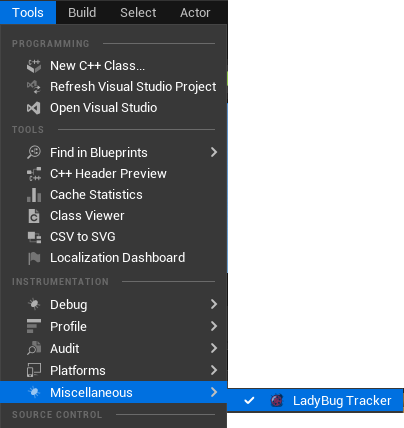
The LadyBug Tracker user interface is made up of the following components:
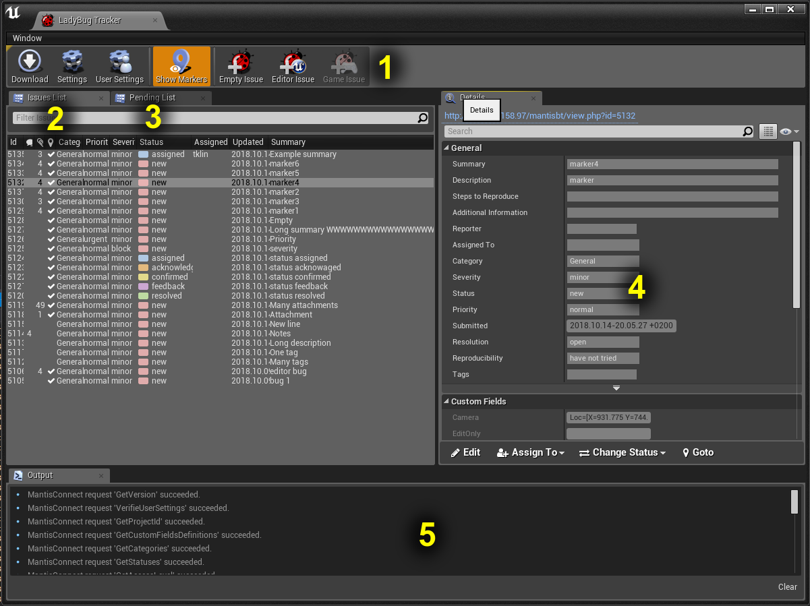
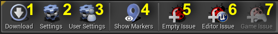
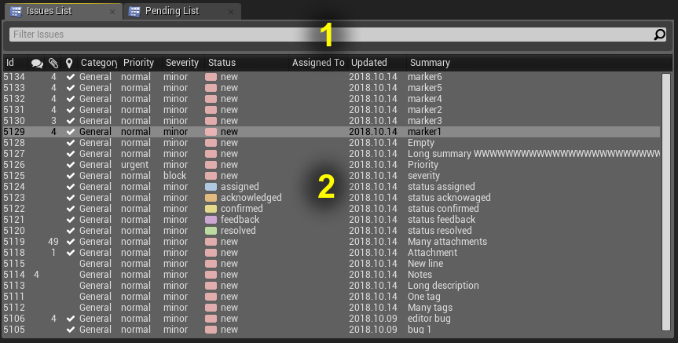
After downloading all bugs from the server, all issues are presented on this list (2). Issues from this list can be filtered to narrow the number of entries to the ones you are interested in (1). The Issue List filter enables you to search your issues using advanced syntax like in the Content Browser. The advanced search syntax supports sophisticated search queries, and allows searching by key-value pairs from issue properties. See the Advanced Search Syntax page for more information.
Example usage:
| Filter Phrase | Description |
|---|---|
| hello | issues containing word 'hello' in the summary, description or additional information fields |
| ...llo | issues containing a summary, description or an additional information ended with ‘llo' |
| updated >= 2017 | updated in 2017 or later |
| updated = 201712 | updated in December of 2017 |
| updated = 20171224 | updated on 24 December of 2017 |
| updated < 20171224.13 | updated before 1 pm 24 December of 2017 |
| status != resolved | all unresolved issues |
| severity > minor | severity greater than minor |
| assignedto = john_smith | assigned to john smith |
| submitted = 2018 & status = new | new issues submitted in 2018 |
The Pending List contains a list of pre-reported bugs that are expected to be filled in and submitted to the server (see Reporting Bugs). Similarly to Issues List, the Pending issues can be filtered.
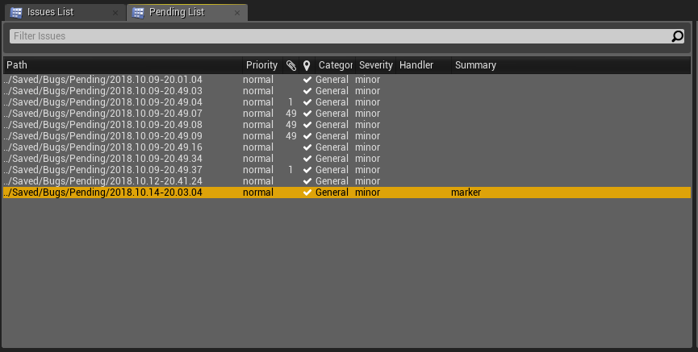
Details panel presents all the information available for the selected bug.
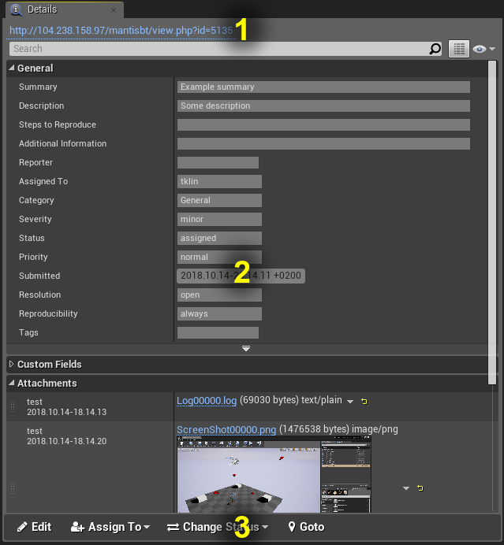
Contains all the most crucial information for the selected issue.
Standard properties are available by default in the Mantis.
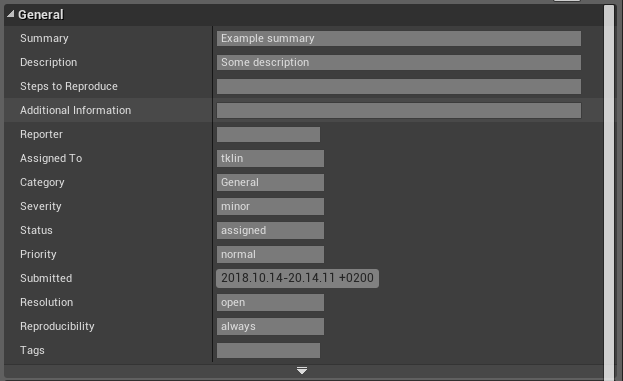
User-defined fields. Custom fields are represented only as text. Validation is made on the server side during submission.
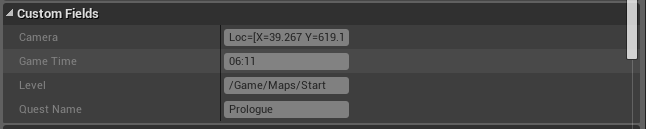
The Attachments section presents a list of attachments. For images in PNG, BMP, and JPG formats, the plugin can display thumbnails.
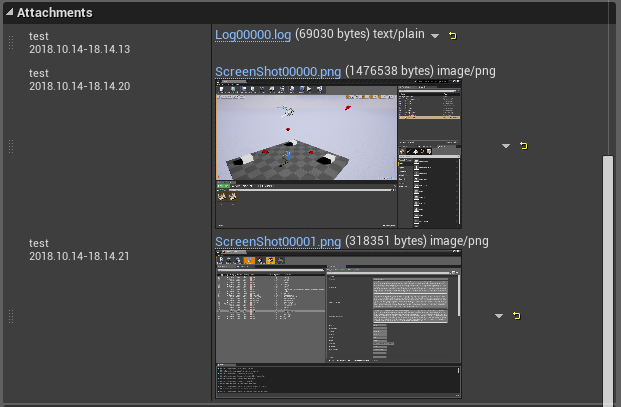
The Comments section presents all notes added to the issue. Here you can also add new notes.

History of all activities corresponding to the issue.
| Note: For now, history doesn't show readable values for enum types like category or priority. Instead, the numeric value is displayed. |
|---|
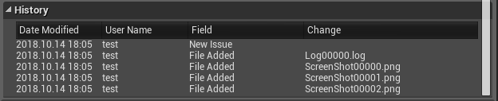
Depending on the current mode the toolbar presents a different set of controls.
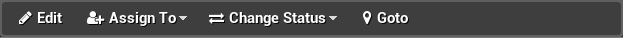
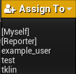
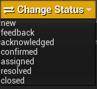
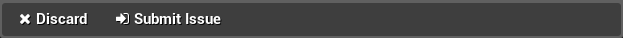
The Output panel is the central hub for gathering the log output of plugin operations. In case of any troubles, this is the first place where you should look for causes.
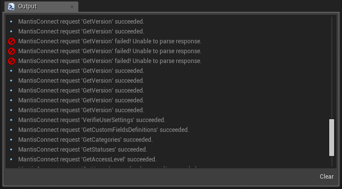
The same logs that appear in the Output panel you can also find in the Message Log tab in the Bug Tracker section . You can increase logs verbose in the project settings in the section “Debug”
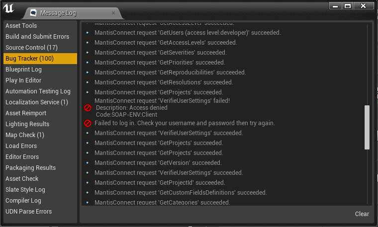

This window may be different dependent on chosen provider.
LadyBug Tracker settings can be edited in the Project Settings tab under the Plugins section. The settings are stored in /Config/DefaultBugTracker.ini file and can be shared by your team.
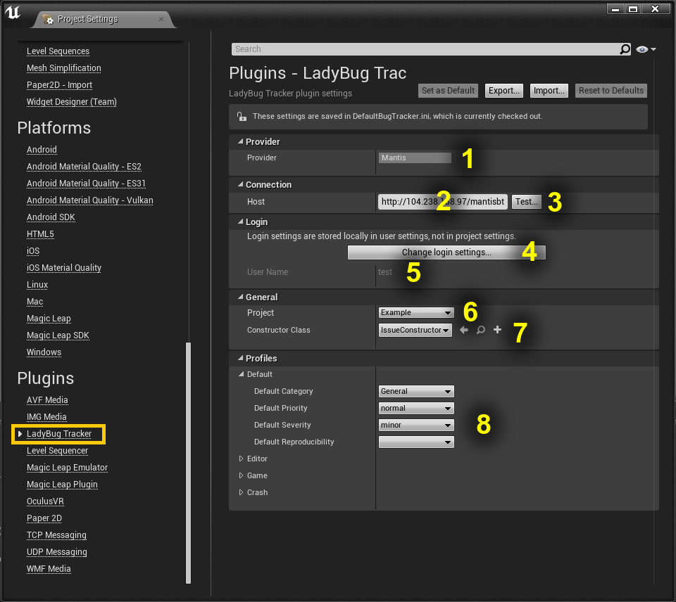
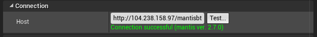
User settings like preferences, login, and password are stored in /Saved/Config/WindowsEditor/BugTrackerPerProjectUserSettings.ini file.
When reporting bugs in the editor or game, the plugin automatically saves the level name, location, and orientation of the camera. Each bug that has this information is marked on the Issues List in a column with

a symbol.
| Attention! This feature is available only if the Camera and Level fields are added in the custom fields. |
|---|
Thanks to the location information stored in an issue, we can jump very fast to the level in the location associated with the issue. To do this, just click the button

All issue markers associated with the currently opened level can be displayed in the level viewport. To enable this feature check
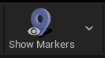
in Toolbar.
Selecting a marker on the level viewport opens the issue in Details panel. Double-click on a marker jumps to the marker’s location.
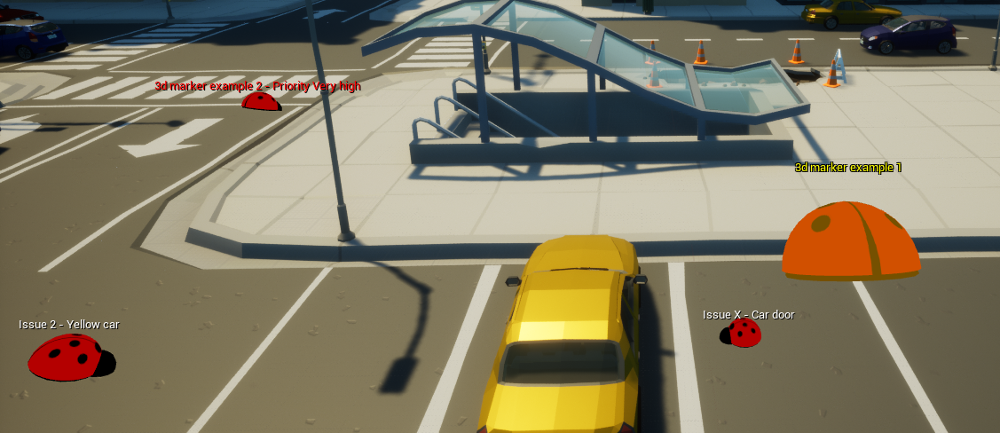
3D markers labels can be adjusted from here:
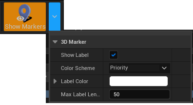
The most powerful feature of this plugin is the very convenient and customizable reporting issues.
All reported bugs are sent to the pending list, thanks to which we can describe and submit an issue on the server at any convenient moment. For each newly added bug, a subdirectory is created in the ../Saved/Bugs/Pending/ directory. All files that are there, will be automatically added to the bug as attachments.
Issues can be reported in two ways. From the Toolbar or using the keyboard shortcut after earlier assigning to some key. The bugs reported in the editor automatically include the log and screenshots of all open editor windows.
Bug reporting in the game can be done in three ways. From the Toolbar, from the console, or from a blueprint (see Triggering Reporting Bugs). To report a bug from the console, open the console in the game and fire the command ReportBug bug_summary. The bugs reported from the game will have attached in a screenshot and the log.
Each crash that happened will also appear on the pending list, so it is very easy to report it. Bugs from crashes contain the log from the game, minidump, and other files saved by UnrealEngine’s crash reporting tool.
Before submitting an issue, all screenshots can be edited in a user-defined image editor e.g paint.

By checking Upload checkbox you can decide what files should be attached.
LadyBug Tracker allows to send feedback from users with attachments (logs/saves/screenshots) in the shipping game.
For user feedback submissions, we use authentication data different from those used in the editor. It is good practice to use a separate account created specifically for this purpose for reporting bugs. For security reasons, the account should have minimal permissions assigned.
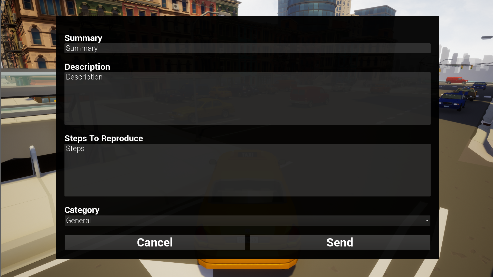
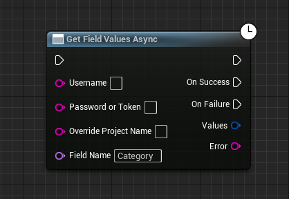
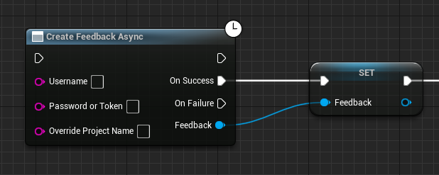
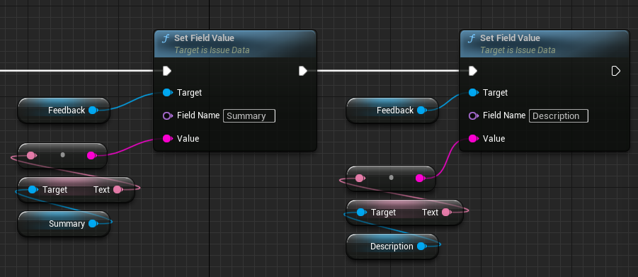
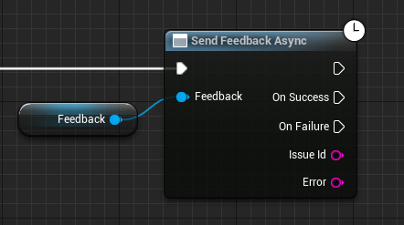
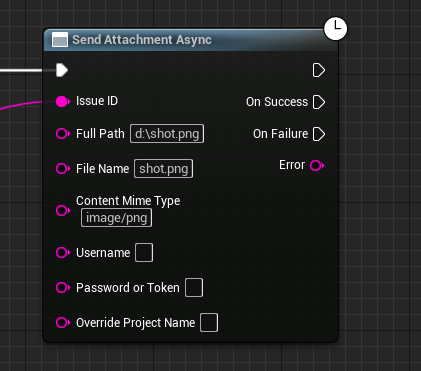
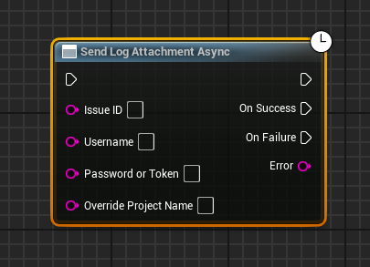
To increase QA team efficiency, some of the tedious work can be done automatically for them.
Profiles help to override default values for given fields dependent on a report issue mode. To override these default values open LadyBug Tracker Project Settings.
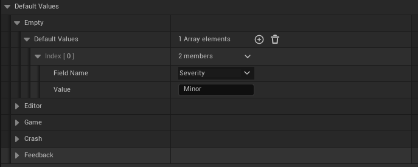
Issue Constructor is a blueprint class that can modify any issue parameters. E.g. you can add additional information that helps reproduce issue like current quest name or player character skills.
To create your own Issue Constructor you need to create a blueprint that inherits from IssueConstructor and overrides Construct Issue function. Function Construct Issue will be called for all bugs just after the issue will be reported.
In the example below for all issues reported in the game, information about the current level, the game time and some steps to reproduce will be added.

To set your Issue Constructor, select an IssueConstructor class from the combo box in Project Settings.

You can also automatically create issues when some certain condition appears in the game. E.g. when the player falls under the terrain.

This reporting method allows you to add additional information like player position, colliding objects etc.
To report bug, call node CreateIssue. This node only creates Issue object that can be modified later.
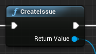
After Issue object has been set up we must call ReportIssueData function. The reported issue will go to the Pending List.
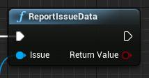
You can also call ReportIssue which creates and reports an issue with a given summary.
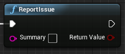
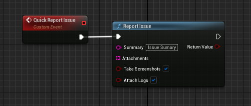
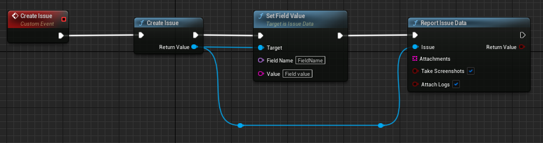
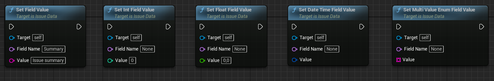
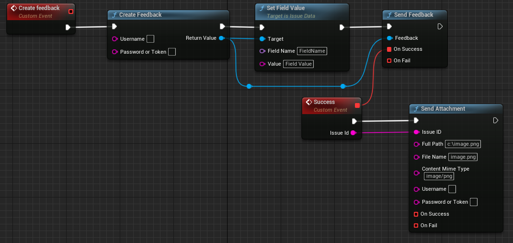
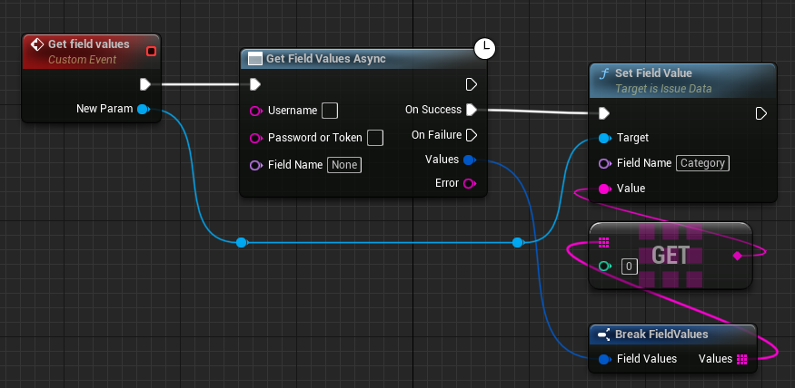